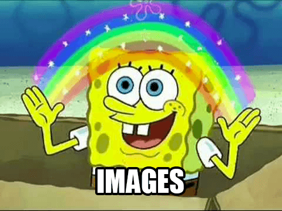

Digamos que você tem um produto, um portfolio, ou apenas uma ideia que você quer compartilhar com todos no seu
próprio website. Antes de publicá-lo na internet, você quer deixá-lo atraente, profissional ou pelo
menos decente para ser visto.
Qual a primeira coisa em que você deve trabalhar?
Conteúdo
O propósito do design é melhorar a apresentação do conteúdo em que ele é aplicado. Pode
parecer óbvio, mas sendo o conteúdo o elemento primário de um website, ele não pode ser deixado
para depois.
Conteúdo escrito, como o parágrafo que você está lendo, Written content, like the paragraph you're currently
reading, compõe mais de 90% da Web. Estilizar esse conteúdo textual vai por um longo caminho.
Vamos assumir que você finalizou o conteúdo que quer publicar e acabou de criar um arquivo
estilo.css vazio, qual é a primeira regra que você pode escrever?
Centralizar
Linhas de texto longas pode ser difícil de analisar e portanto difícil de ler. Definir um
limite de caracteres por linha aumenta muito a facilidade de leitura e o apelo de um bocado de texto.
body {
margin: 0 auto;
max-width: 50em;
}
Depois de estilizar os blocos de texto, que tal estilizar o próprio texto?
Família de Fontes
A fonte padrão do navegador é a "Times", que pode parecer sem graça (principalmente porque é uma
fonte "sem estilo"). Trocar por uma fonte sans-serif como "Helvetica" ou
"Arial" pode melhorar drasticamente a aparência da sua página.
body {
font-family: "Helvetica", "Arial", sans-serif;
}
Se você quiser continuar usando uma fonte com serifa, tente a "Georgia".
Agora que isso tornou o texto mais atraente, vamos também torná-lo mais fácil de ler.
Espaçamento
Quando uma página parece "quebrada" para um usuário, normalmente é um problema de espaçamento.
Deixar espaço tanto ao redor quanto dentro do seu conteúdo pode melhorar a aparência da sua
página.
body {
line-height: 1.5;
padding: 4em 1em;
}
h2 {
margin-top: 1em;
padding-top: 1em;
}
Mesmo que o layout tenha melhorado bastande até agora, vamos aplicar mais algumas mudanças sutis.
Cor & contraste
Texto preto em um fundo branco pode ser desagradável para os olhos. Optar por uma tonalidade mais leve de preto
para o texto do corpo deixa a página mais confortável para ler.
body {
color: #555;
}
E para manter um nível decente de contraste, vamos escolher uma tonalidade mais escura para
palavras importantes
h1,
h2,
strong {
color: #333;
}
Enquanto a maior parte da página melhorou visualmente, alguns elementos (como os trechos de código) ainda
parecem fora de lugar.
Balanço
Bastam apenas alguns toques adicionais para corrigir o balanço da página:
code,
pre {
background: #eee;
}
code {
padding: 2px 4px;
vertical-align: text-bottom;
}
pre {
padding: 1em;
}
A essa altura você deve querer que sua página se destaque entre as demais e dar-lhe uma identidade.
Cor primária
A maioria das marcas tem uma cor primária que acentua/realça o visual. Em um website, esse
realce pode ser usado para fornecer ênfase para elementos interativos, como links.
a {
color: #e81c4f;
}
Mas para manter o balanço, vamos precisar de cores adicionais.
Cores Secundárias
A cor de realce pode ser complementada com mais tons sutis, a serem usados em bordas, fundos ou até
mesmo o corpo do texto.
body {
color: #566b78;
}
code,
pre {
background: #f5f7f9;
border-bottom: 1px solid #d8dee9;
color: #a7adba;
}
pre {
border-left: 2px solid #69c;
}
Tendo alterado os tons, porque não alterar as formas...
Fonte personalizada
Como o texto é o conteúdo principal de uma página web, usar uma fonte customizada dá à página
uma identidade ainda maior.
Podemos embutir nossa própria webfont o usar um serviço online como Typekit, vamos usar "Roboto" do serviço gratuito Google Fonts:
body {
font-family: "Roboto", "Helvetica", "Arial", sans-serif;
}
Depois de melhorar a identidade através do texto, que tal adicionar mil palavras...

Gráficos e ícones podem ser usados como ornamentos para auxiliar o conteúdo ou podem ter um papel mais ativo na
mensagem que eles transmitem.
Vamos melhorar nosso cabeçalho com uma boa imagem de fundo do Unsplash
header {
background-color: #263d36;
background-image: url("/imagens/header.jpg");
background-position: center top;
background-repeat: no-repeat;
background-size: cover;
line-height: 1.2;
padding: 10vw 2em;
text-align: center;
}
Vamos também adicionar um logo
header img {
display: inline-block;
height: 120px;
vertical-align: top;
width: 120px;
}
Aproveitemos a oportunidade para melhorar os estilos do texto.
header h1 {
color: white;
font-size: 2.5em;
font-weight: 300;
}
header a {
border: 1px solid #e81c4f;
border-radius: 290486px;
color: white;
font-size: 0.6em;
letter-spacing: 0.2em;
padding: 1em 2em;
text-transform: uppercase;
text-decoration: none;
transition: none 200ms ease-out;
transition-property: color, background;
}
header a:hover {
background: #e81c4f;
color: white;
}
E voilà!
Nós criamos um página decente em apenas alguns minutos, seguindo princípios básicos de web design.